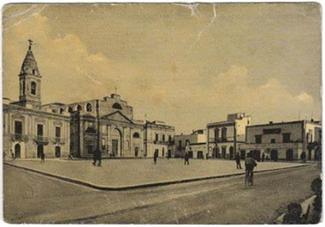
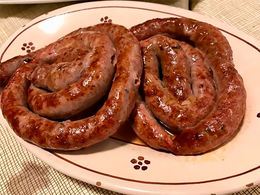

Sammichele di Bari
Sammichele di Bari è un paesino fondato nel lontano 17 marzo 1871.

Conosciuto per le sue tradizioni coma la famosa zampina una salsicia arrotolata.

Nel 11/06/2017 fu eletto come sindaco Lorenzo Netti nato nel 14/07/1975 a Gioia del Colle.
Alla sua elettura, rivoluzionò completamnte sammichele rendendolo vivo cominciado con ristrutturarlo compltamente, i
concerti...
powered by: Giuseppe Marinelli
section: 3b inf
e-mail: ombraoskura.github.io